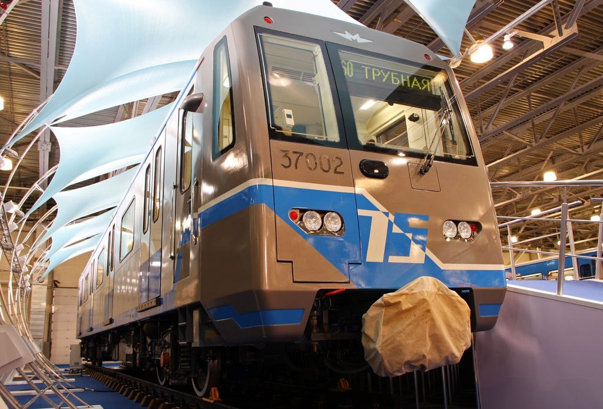

Опытный поезд 81-760/761
Этот опытный состав стал предшественником серии «Ока». Построен в 2010 году, проходил испытания на линиях Московского метрополитена.
Общая информация
| Параметр | Значение |
|---|---|
| Модель | 81-760/761 |
| Год постройки | 2010 |
| Составность | 37001 + 6 × 30001-30006 |
| Текущее состояние | Вагоны списаны, часть утилизирована, часть ожидает утилизации |
Жизненный путь головного вагона 37001
Этот вагон активно использовался для испытаний и презентаций, а также успел поработать тренажёром и донором запчастей.
Состав по вагонам
Детальная информация по каждому вагону опытного состава (построен в 2010 году):
| Вагон | Модель | Построен | Списан | Текущее состояние |
|---|---|---|---|---|
| 37001 (головной) | 81-760 | 04.2010 | 10.2021 | Хранение в ТЧ-16 «Митино», ожидает утилизации |
| 37002 (головной) | 81-760 | 04.2010 | 10.2021 | Утилизирован |
| 30001 (промежуточный) | 81-761 | 04.2010 | 10.2021 | ТЧ-8 «Варшавское» (донор запчастей) |
| 30002 (промежуточный) | 81-761 | 11.2010 | 10.2021 | ТЧ-8 «Варшавское» (донор запчастей) |
| 30003 (промежуточный) | 81-761 | 11.2010 | 10.2021 | Утилизирован (12.2021) |
| 30004 (промежуточный) | 81-761 | 11.2010 | 10.2021 | Хранение в ТЧ-16 «Митино», ожидает утилизации |
| 30005 (промежуточный) | 81-761 | 11.2010 | 10.2021 | Утилизирован (05.2022) |
| 30006 (промежуточный) | 81-761 | 11.2010 | 10.2021 | Хранение в ТЧ-16 «Митино», ожидает утилизации |
| 37002 (головной) | 81-760 | 04.2010 | 10.2021 | Утилизирован (12.2021) |
Особенности конструкции: Отсутствуют форточки (установлены кондиционеры); внешний сварной шов. У головных вагонов (37001, 37002): окрас «75 лет Мосметро», с 03.2011 — светодиодные фары.
Подробная история вагона 37001
Поступление
Вагон поступил в Московский метрополитен на испытания.
Первая обкатка
Начались испытания на линии по маршруту ТЧ-8 «Варшавское» — «Серпуховская» — ТЧ-8 «Варшавское».
Ночная обкатка
Проведена ночная обкатка на Бутовской линии.
Пуск станций
Вагон участвовал в пуске станций «Достоевская» и «Марьина Роща».
Тормозные испытания
Проведены тормозные испытания на Бутовской линии.
Презентация президенту
Состав был презентован президенту на заводе «Метровагонмаш».
Работа тренажёром
Вагон использовался в качестве тренажёра в депо ТЧ-12 «Новогиреево».
Донор запчастей
Находился в ТЧ-3 «Измайлово», где использовался как донор запчастей.
Ожидание утилизации
Приблизительно с этой даты находится на хранении в ТЧ-16 «Митино» и ожидает утилизации.
Фотогалерея

Общий вид состава.

МВЦ «Крокус Экспо».

Вид назад.
Нажмите на фото для увеличения
«Это был один из последних опытных поездов. Красивый вагон, жаль, что его утилизировали...»